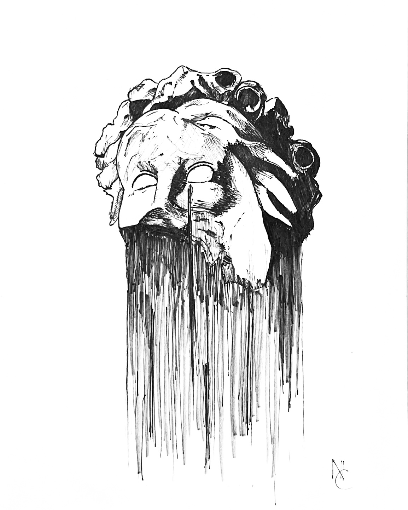
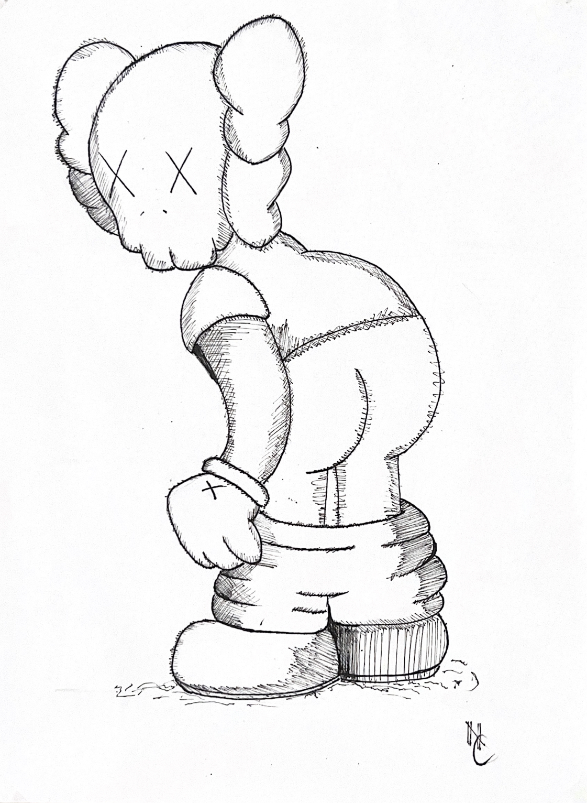
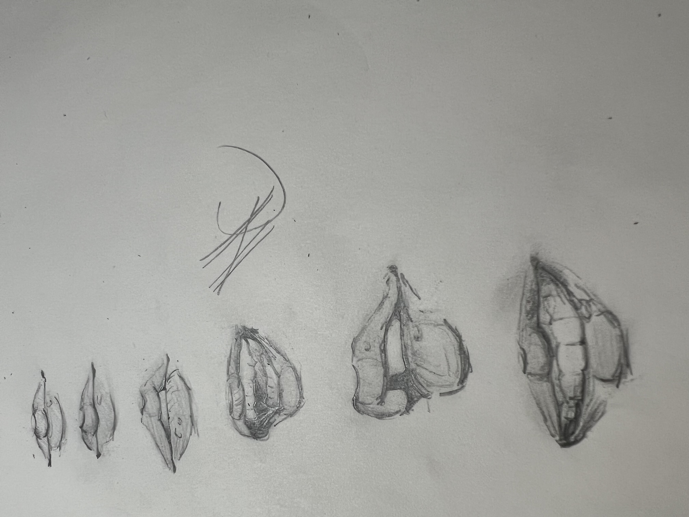
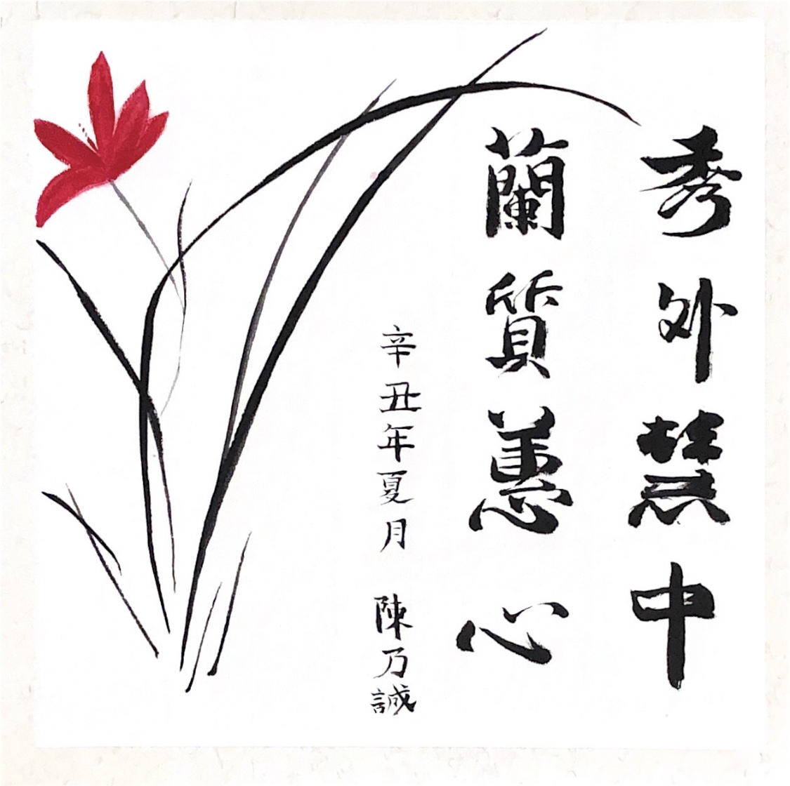

One Republic's "Human" album cover done with Micron
fine liner pens.

Micron fine liner pen drawing of KAWS "Companion" character. This is
one of my set of three KAWS drawings.

Experimental sketches of lip shapes.

A calligraphy piece I gifted to my grandma. The top characters of
the four character phrases are her name. The full 8 character phrase
describes her as beautiful, kind, and intelligent.